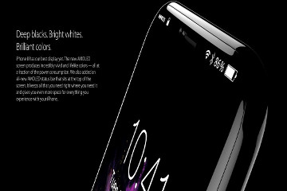
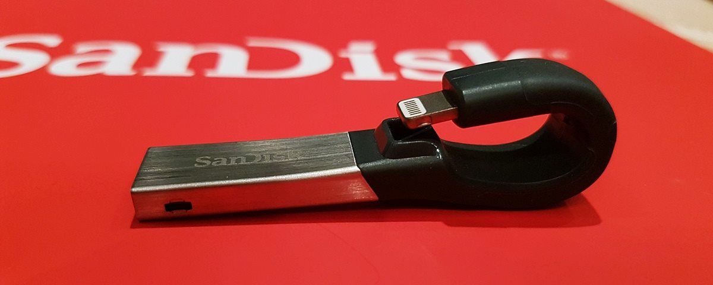

Switch começa com pé direito e ações da Nintendo sobem no lançamento
Postado em 22 fervereiro 2017O Nintendo Switch começou com o pé direito. Fatores como o lançamento simultâneo com The Legend of Zelda: Breath of the Wild, a proposta híbrida ambiciosa e as inúmeras possibilidades que estão por vir criaram otimismo no mercado. Segundo aponta o Bloomberg, as ações da Big N subiram com o lançamento do video game. A bolsa de Tóquio registrou, ao final do dia 3 de março, data que marcou a chegada do aparelho às prateleiras, uma guinada de 4%, com excelente projeção para os próximos dias – de acordo com o portal, os investidores estão “ansiosos”, e isso configura um cenário de disparada da dona do Mario. De acordo com Atul Goyal, analista na Jefferies Group, a resposta representa um “alívio” após o receio gerado anteriormente. Na visão de Piers Harding-Rolls, do IHS Markit, o impacto em longo prazo é o mais importante para a proposta híbrida. “Convencer mais gente pode dar trabalho. Uma mistura de conteúdo e funcionalidades apelativas, preço e marketing eficaz será necessária para trazer essa audiência maior”, opinou. O lançamento do Switch foi bem-sucedido: o Reino Unido, por exemplo, registrou 80 mil unidades vendidas, número que representa a metade do que o Wii vendeu quando foi lançado, mas o dobro do Wii U. Bons ventos sopram para o lado da Big N!
Postado por Gabriel MaurilioNovidades sobre o iPhone 8: Touch ID com tecnologia de ultrassom
Postado em 22 fervereiro 2017 Como já comentamos, os rumores indicam que a Apple vai lançar três modelos de smartphones neste ano: iPhone 7s, iPhone 7s Plus e iPhone 8, este último para comemorar os 10 anos de vida da linha celular. Com isso, o trem do hype está apitando forte e diversos rumores vêm em alta velocidade. O último deles indica que o iPhone 8, que deverá dispor de uma tela OLED, contará com uma tecnologia de ultrassom para suportar a presença do Touch ID — que apareceu em gerações anteriores do iPhone. Será que a Apple terá a coragem para inovar? A tela, aliás, será o verdadeiro ponto de destaque e de "coragem" da Apple: OLED, ela deve recobrir grande parte da área frontal no iPhone 8, como alguns aparelhos Android (caso do LG G6 e Xiaomi Mi MIX). Exatamente por causa da tela "maior", a Apple terá que remover o botão Home, mas perder a capacidade do sensor de impressão digital. Por isso, uma fonte da indústria celular, segundo o Digitimes, comentou que a Maçã foi atrás de uma tecnologia de ultrassom (algoritmo Authentech e tecnologia de identificação Privaris) para identificar os dedos dos usuários. Para reforçar o rumor, a Apple até possui uma patente que detalhe como a tecnologia de ultrassom funciona em dispositivos móveis. A questão que fica agora é: isso vai atrasar o lançamento, já que é algo novo?
Postado por Gabriel MaurilioSanDisk anuncia novos pendrives para iPhone e iPad no MWC
Postado em 22 fervereiro 2017 Durante a sua participação no Mobile World Congress 2017, a Western Digital anunciou dois novos integrantes da sua família de unidades flash para dispositivos iOS: os pendrives SanDisk iXpand e SanDisk Connect, ambos de 256 GB. Esses acessórios de alta capacidade agora são compatíveis com os novos iPhones e iPads, oferecendo aos clientes da Apple o espaço necessário para gravar muito mais fotos e vídeos. "À medida que as pessoas captam mais fotos e vídeos com seus iPhones, algumas delas, vez ou outra, querem movê-los para outro dispositivo de armazenamento ou fazer backup de seu valioso conteúdo digital. Nosso objetivo é acompanhar essas tecnologias em evolução oferecendo soluções de armazenamento móveis que ajudam a garantir que os consumidores possam captar aqueles momentos perfeitos sem ter com que se preocupar", afirma Dinesh Bahal, vice-presidente de desenvolvimento de produtos da Western Digital.